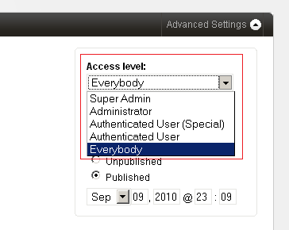

Users and Access Control
Couch supports creation of any number of user accounts.
Each user account can be assigned to one of the four groups discussed below and depending on the containing group, the account's access to the web-site is controlled.
1. Super Admin
The first user account that gets created during Couch's installation. It is an all-powerful account and only one such account can exist in Couch.
A Super Admin can do everything that a user possibly can in Couch. Specifically, he can -
- Create/manage templates and define editable regions, folders etc. within templates.
- Access the Admin panel and create new pages and edit/delete all existing pages.
- Create/manage any number of lower level user accounts.
- Access the website.
Usually it is the designer/coder building the site that uses this super-admin account. If you've gone through the creation of editable regions and some other tags like the folder tag, you'll recall that persisting the changes made to the template using these tags, requires visiting the web-page while logged in as this super-admin account.
Hence this account is used by someone who makes structural changes to the web-site.
2. Administrator
The super-admin can create any number of administrator level accounts.
These accounts are meant to be used by the web-site owners who will be responsible for managing the contents and day to day operations of the web-site.
An Administrator can -
- Access the Admin panel and create new pages and edit/delete all existing pages except those that have been marked by the Super Admin has having only super-admin access (usually done to prevent the site owners from accidently modifying them).
- Create/manage any number of lower level user accounts.
- Access the website.
All the users belonging to the Administrator group have identical access permissions and can add/delete/modify each other's pages.
3. Registered Users
The super-admin/administrators can create registered users by placing them in either of these two lower-level accounts -
Authenticated User (Special)
Authenticated User
These two accounts are meant for visitors who are registered with the website.
Registered users can -
- Only access the website.
4. Unauthenticated
Every visitor to the website who is not logged-in is automatically placed in this group by Couch.
Thus unregistered users as well as registered users who have not yet logged-in by providing their username/password are placed in this group.
Unauthenticated users can -
- Only access the website.
Only users belonging to the Super Admin and the Administrator groups can access the Couch's Admin panel.
All users, as far as Couch is concerned, can equally access the website.
It is you, who as the designer/coder decides which pages or portion of the pages within the website these users can access. Couch will simply, by setting relevant variables, indicate the group of the visitor so that your code can take appropriate action.
ACCESS CONTROL
To be honest, the access mechanism currently implemented is fairly coarse (you can expect some major changes in the coming versions).
However some very powerful access control can be wired up by properly using the available functionality.
Before us see how, we need to know a few facts that we'll use -
Upon the execution of every page, the following variables are set by Couch to give information about the visitor accessing the page -
- k_logged_in
- k_logged_out
- k_user_id
- k_user_name
- k_user_title
- k_user_email
- k_user_access_level
- k_user_disabled
- k_login_link
- k_logout_link
The k_logged_in or k_logged_out variable can be used to figure out if the visitor is currently logged in and hence possesses an account on the website.
If he is logged-in, the k_user_id, k_user_name, k_user_title, k_user_email and k_user_access_level can be used to get details about him.
The k_user_access_level is an important variable and indicates the 'group' of the user by the following numeric values -
- Super Admin: 10
- Administrator: 7
- Authenticated User (Special): 4
- Authenticated User: 2
- Everybody: 0
As can be seen, the higher the number, the more powerful an account is deemed to be.
Template level access
All the pages cloned from a particular template can be configured to be accessible by only users of a certain level by simply setting the access_level parameter of the template tag to the minimum level required. Thus -
<cms:template title='News' clonable='1' access_level='2'>
<!-- Editable regions and Folders are usually defined here -->
</cms:template>
- to access any of the pages cloned from the template above the user must atleast be an Authenticated User. None of the pages would be accessible without being logged in.
Page level access
Access to any individual page can be controlled by selecting the minimum access level required from the dropdown list visible while editing the page in Admin Panel -

In both the cases mentioned above, if a page is accessed by a user who is not logged-in, the login box is displayed to him to input his credentials.
If the user is already logged-in but his current access level is less than that required to access the page, a message is displayed to him prompting him to logout and re-login with proper credentials.
Element level access
The most fine-grained access control can be achieved by restricting access to certain parts of a page - e.g. text or links to files that are to be made available to only registered users.
<cms:if k_user_access_level ge '4' >
<h1>If you can see this you must atleast be an Authenticated User (Special)</h1>
<cms:else />
<cms:if k_logged_out >
You need to be logged in as an Authenticated User (Special) or higher to access this area <p>
Please <a href="<cms:show k_login_link />">Login</a>.
<cms:else />
You do not have sufficient priveleges to access this area<p>
You need to be logged in as an Authenticated User (Special) or higher.<p>
Please <a href="<cms:show k_logout_link />">Logout</a> and login again with the right credentials.
</cms:if>
</cms:if>
In the snippet given above, we first check if the access level of the current visitor is sufficient for him to see the text.
If it is not, it could either be that the user is not logged-in or that he is logged-in but the access level of his account is lesser than the required level.
We check this by the k_logged_out variable and then show the appropriate message.
Note how we use the k_login_link and k_logout_link to diplay the links that the user can click to either login or logout.
Access control of discrete files
Access control can be exercised upon discrete files placed on your server, e.g. image files and pdf files, by using the cloak_url tag.
Please see Cloaked links - Allowing only registered users to a access links section for a full discussion of this.